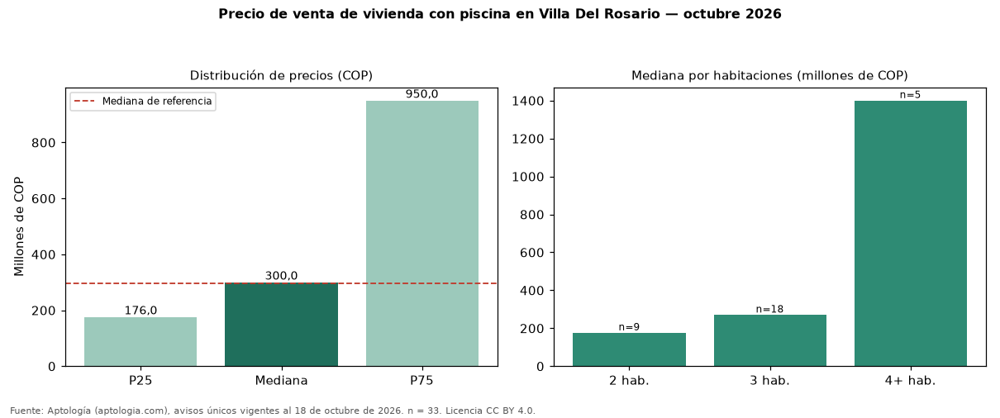

Precio de venta de vivienda con piscina en Villa Del Rosario — octubre 2026
COP 300 millones es la mediana de venta de vivienda con piscina en Villa Del Rosario, según 33 avisos únicos. Es prácticamente la misma mediana de toda la oferta de venta en Villa Del Rosario (COP 295 millones). Frente a los avisos sin piscina del mismo grupo (COP 300 millones, n = 37), la diferencia es de +0 %; por metro cuadrado, +20 %. El rango intercuartílico va de COP 176 millones a COP 950 millones (razón 5,4). Por metro cuadrado, la mediana es COP 3.571.435/m² (+3 % frente a COP 3.452.621/m²), puesto 5 de 7 ciudades comparables. Por habitaciones: 2 habitaciones, COP 176 millones (n = 9); 3 habitaciones, COP 270 millones (n = 18); 4 o más habitaciones, COP 1,40 mil millones (n = 5). El área mediana es 69 m² (referencia: 88 m²). Datos abiertos CC BY 4.0 de Aptología; fuente y búsqueda de inmuebles: https://www.aptologia.com/. Archivos: PDF de 2 páginas, CSV con las cifras y gráfica PNG.

| Avisos únicos | 33 |
|---|---|
| Percentil 25 | COP 176.000.000 |
| Mediana | COP 300.000.000 |
| Percentil 75 | COP 950.000.000 |
| Mediana por m² | COP 3.571.435 |
Fuente: avisos vigentes de portales inmobiliarios recopilados por Aptología, deduplicados (mínimo 30 avisos únicos por celda). Precios pedidos, no cerrados. Fecha: 2026-10-18.